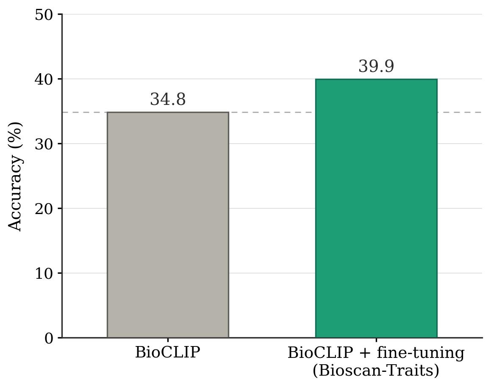

Method

The Ohio State University · University of Maine
Morphological traits are physical characteristics of biological organisms that provide vital clues on how organisms interact with their environment. Yet extracting these traits remains a slow, expert-driven process, limiting their use in large-scale ecological studies. A major bottleneck is the absence of high-quality datasets linking biological images to trait-level annotations.
In this work, we demonstrate that sparse autoencoders trained on foundation-model features yield monosemantic, spatially grounded neurons that consistently activate on meaningful morphological parts. Leveraging this property, we introduce a trait annotation pipeline that localizes salient regions and uses vision-language prompting to generate interpretable trait descriptions.
Using this approach, we construct Bioscan-Traits, a dataset of 80K trait annotations spanning 19K insect images from BIOSCAN-5M. Human evaluation confirms the biological plausibility of the generated morphological descriptions. We assess design sensitivity through a comprehensive ablation study. By annotating traits with a modular pipeline rather than prohibitively expensive manual efforts, we offer a scalable way to inject biologically meaningful supervision into foundation models, enable large-scale morphological analyses, and bridge the gap between ecological relevance and machine-learning practicality.
We release Bioscan-Traits, a large-scale morphological trait dataset for insects, constructed automatically using our pipeline.
Available on Hugging Face. Built on top of the BIOSCAN-5M insect image collection, each annotation links an image region to an interpretable morphological trait description generated by our pipeline.
To validate the utility of Bioscan-Traits, we fine-tune BioCLIP on our dataset and evaluate on a held-out insect classification benchmark. Fine-tuning with trait-annotated data yields a +5.1% improvement in accuracy over the BioCLIP baseline, demonstrating that our automatically generated morphological annotations provide meaningful biological supervision.

If you find this work useful, please cite our paper:
@inproceedings{pahuja2026automatic,
title = {Automatic Image-Level Morphological Trait Annotation
for Organismal Images},
author = {Pahuja, Vardaan and Stevens, Samuel and East, Alyson
and Record, Sydne and Su, Yu},
booktitle = {The Fourteenth International Conference on
Learning Representations},
year = {2026},
url = {https://openreview.net/forum?id=oFRbiaib5Q}
}
We gratefully acknowledge the following projects and communities whose work made this research possible: